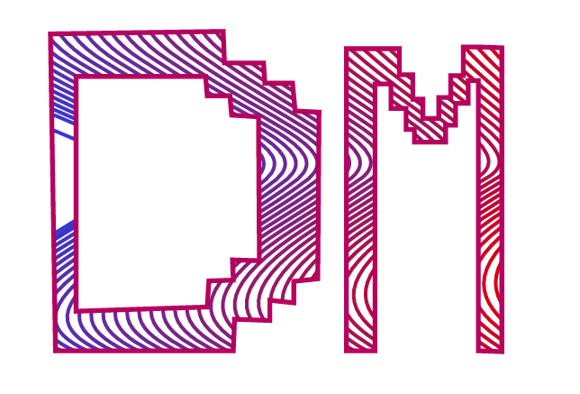
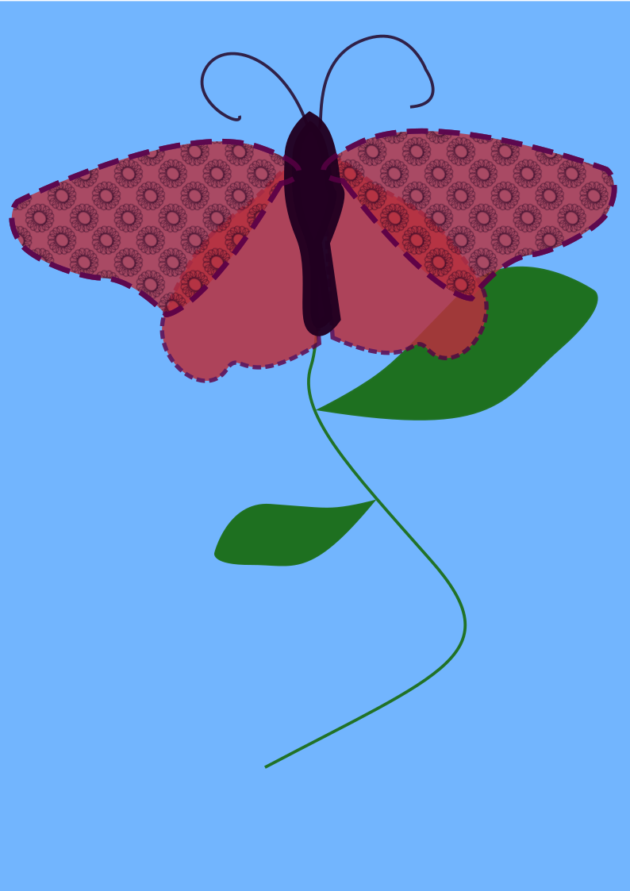
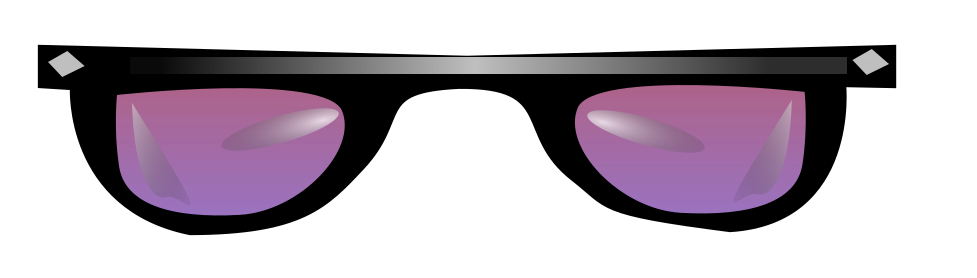
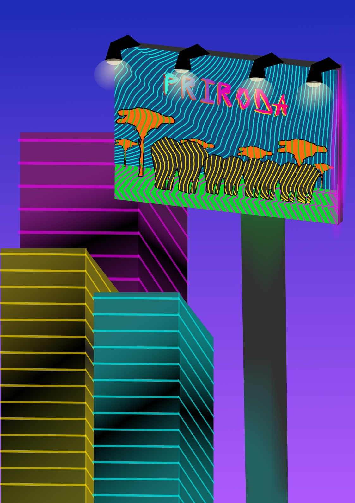
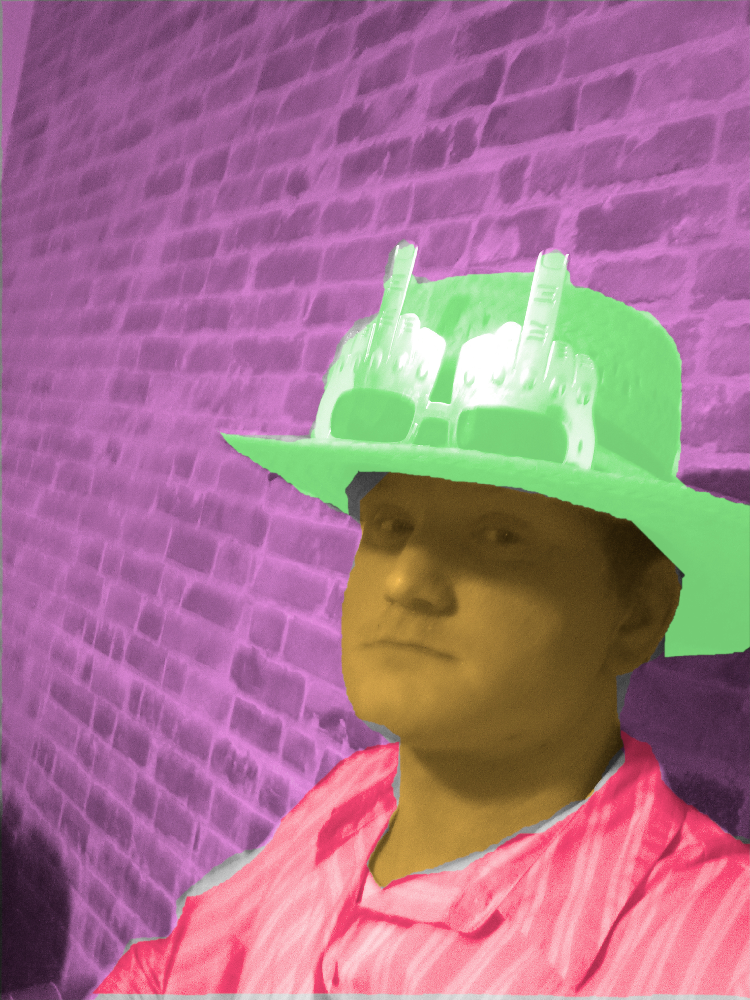
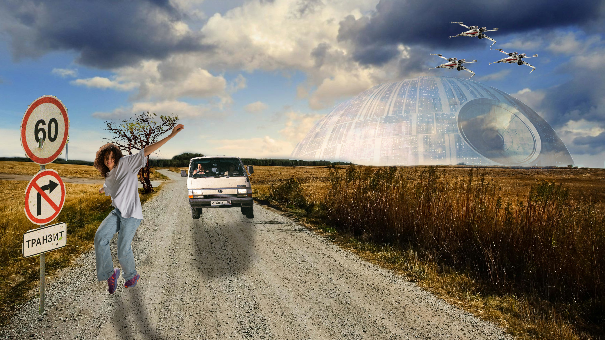
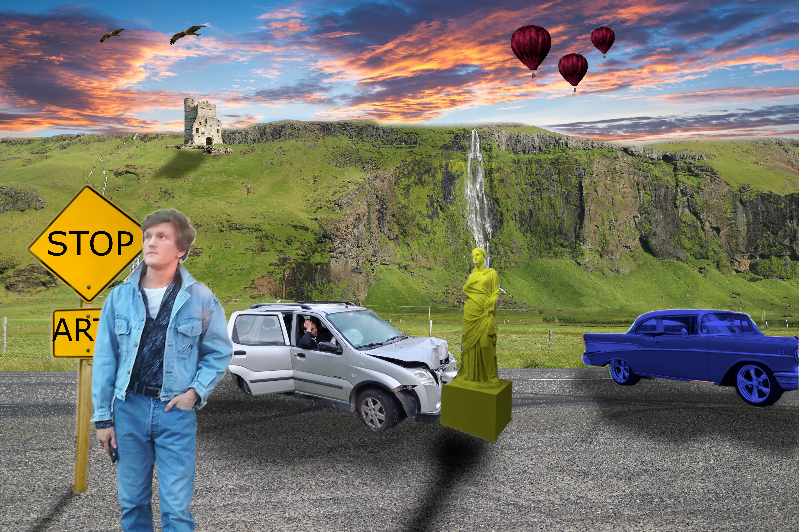
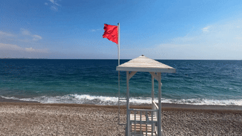

Druga vježba - Bezierova krivulja, precizno crtanje

Treća vježba - Boja transformacije i uzorci

Četvrta vježba - složeni objekti, gradijenti, transparencija

Prvi projektni zadatak

Peta vježba - retuširanje
Šesta vježba - koloriranje

Sedma vježba - fotomontaža

Drugi projektni zadatak

Osma vježba - Kinemagraf

Deveta vježba - video obrada